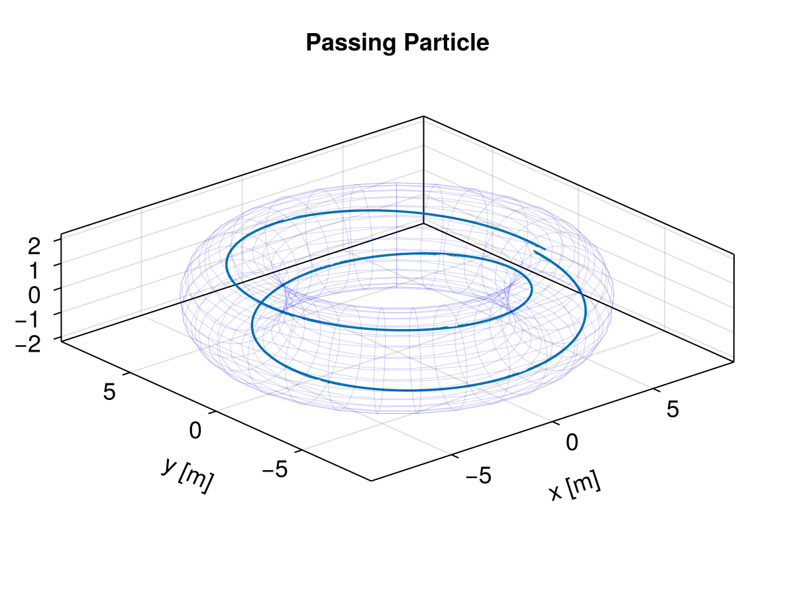
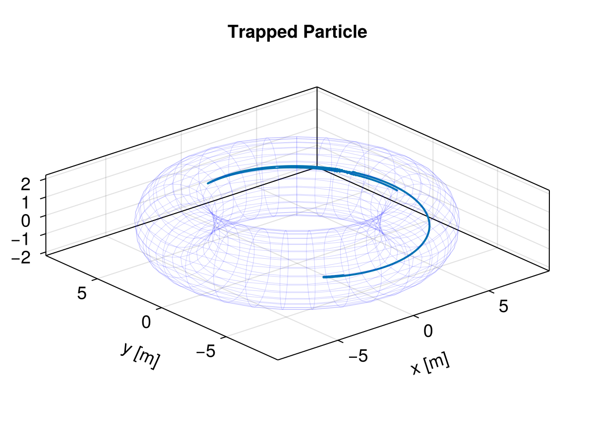

Tokamak profile


This example shows how to trace protons in a stationary magnetic field that corresponds to an ITER-like Tokamak.
using TestParticle
using TestParticle: getB_tokamak_profile
using OrdinaryDiffEq
using StaticArrays
using GeometryBasics
using CairoMakie
# Parameters from ITER, see http://fusionwiki.ciemat.es/wiki/ITER
const R₀ = 6.2 # Major radius [m]
const Bζ0 = 5.3 # toroidal field on axis [T]
const a = 2.0 # Minor radius [m]
# Variable must be a radius normalized by minor radius.
function q_profile(nr::Float64)
return nr^2 + 2*nr + 0.5
end
function B(xu)
SVector{3}(getB_tokamak_profile(xu[1], xu[2], xu[3], q_profile, a, R₀, Bζ0))
end
function E(xu)
SA[0.0, 0.0, 0.0]
end
"Contruct the topology of Tokamak."
function get_tokamak_topology()
nθ = LinRange(0, 2π, 30)
nζ = LinRange(0, 2π, 30)
nx = [R₀*cos(ζ) + a*cos(θ)*cos(ζ) for θ in nθ, ζ in nζ]
ny = [R₀*sin(ζ) + a*cos(θ)*sin(ζ) for θ in nθ, ζ in nζ]
nz = [a*sin(θ) for θ in nθ, ζ in nζ]
points = vec([Point3f(xv, yv, zv) for (xv, yv, zv) in zip(nx, ny, nz)])
faces = decompose(QuadFace{GLIndex}, Tesselation(Rect(0, 0, 1, 1), size(nz)))
tor_mesh = GeometryBasics.Mesh(points, faces)
endMain.var"##294".get_tokamak_topologyPassing proton in a Tokamak
# initial velocity for passing particle
v₀ = [0.0, 2.15, 3.1] .* 1e6
# initial position, [m]. where q≈2, (2, 1) flux surface.
r₀ = [7.3622, 0.0, 0.0]
stateinit = [r₀..., v₀...]
param = prepare(E, B; species=Proton)
tspan = (0.0, 4e-5) # [s]
prob = ODEProblem(trace!, stateinit, tspan, param)
sol = solve(prob, Vern7(); dt=2e-11);
tor_mesh = get_tokamak_topology()
fig1 = Figure(fontsize=18)
ax = Axis3(fig1[1, 1],
title = "Passing Particle",
xlabel = "x [m]",
ylabel = "y [m]",
zlabel = "z [m]",
aspect = :data,
)
lines!(ax, sol; idxs=(1,2,3))
# Plot the surface of Tokamak
wireframe!(fig1[1, 1], tor_mesh, color=(:blue, 0.1), linewidth=0.5, transparency=true)

Trapped proton in a Tokamak that shows the banana orbit
# initial velocity for trapped particle
v₀ = [0.0, 1.15, 5.1] .* 1e6
# initial position, [m]. where q≈1, (1, 1) flux surface.
r₀ = [6.6494, 0.0, 0.0]
stateinit = [r₀..., v₀...]
param = prepare(E, B; species=Proton)
tspan = (0.0, 4e-5)
prob = ODEProblem(trace!, stateinit, tspan, param)
sol = solve(prob, Vern7(); dt=1e-11)
fig2 = Figure(fontsize=18)
ax = Axis3(fig2[1, 1],
title = "Trapped Particle",
xlabel = "x [m]",
ylabel = "y [m]",
zlabel = "z [m]",
aspect = :data,
)
lines!(ax, sol; idxs=(1,2,3))
wireframe!(fig2[1, 1], tor_mesh, color=(:blue, 0.1), linewidth=0.5, transparency=true)

The trajectory of the trapped particle is sometimes called the "banana orbit".
This page was generated using DemoCards.jl and Literate.jl.